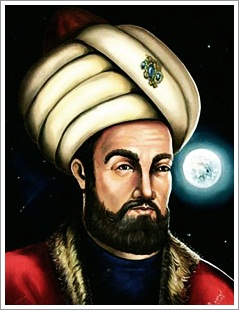

Zamanın Ötesindeki Âlim
Semerkand - 1449

Semerkand'ın yıldızlarla örülü gecelerinde gökyüzünü izleyen bir gençsiniz. Kadızâde Rûmî'nin rehberliğinde hesaplamalarınız ve gözlem yeteneğinizle tanınıyorsunuz. Ancak içinizde sınırların ötesini görme arzusu var...